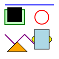

The external SVG should render through the ordinary image path.

The inline SVG should render a rounded rectangle, circle and dashed line.
This text must remain visible after inline SVG.
This text must remain visible after nested self-closing SVG.
An empty SVG must not leave a broken-image box.
Unsupported SVG must remain invisible. Revisit or reload this page, resize the view, and test Stop while SVG imports are queued.
The ordinary image and form below should behave as before.